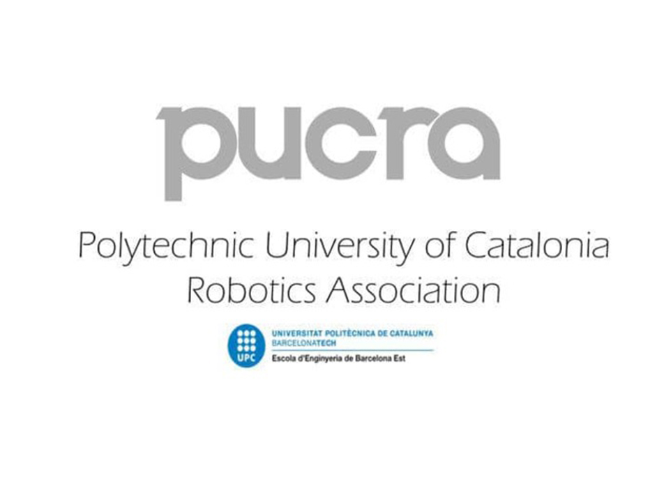
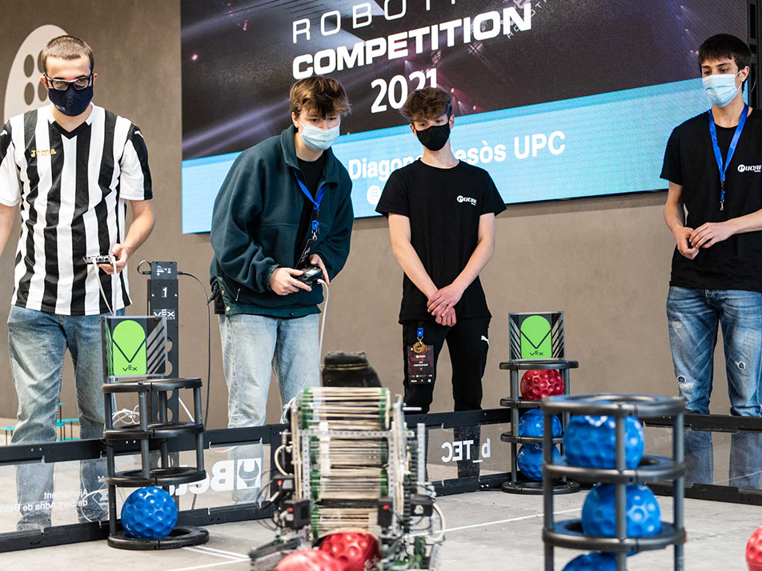
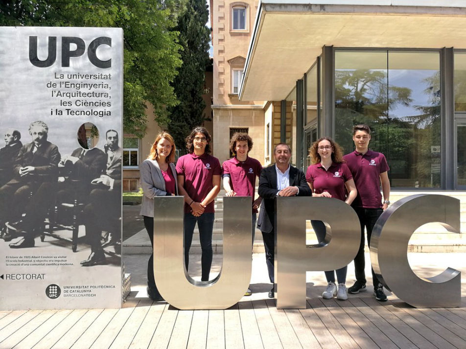
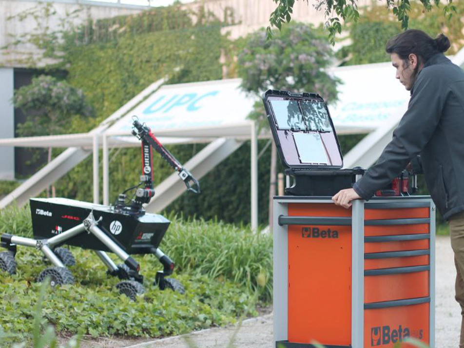
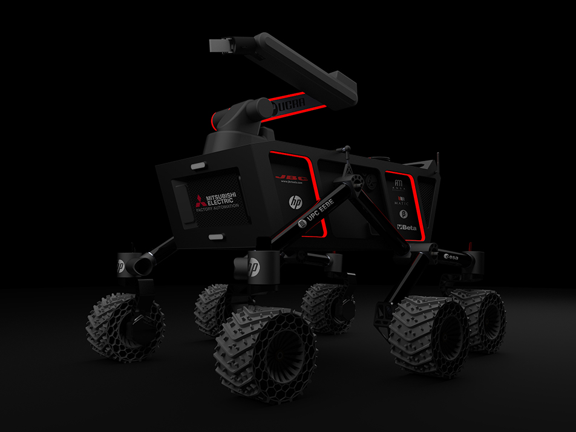
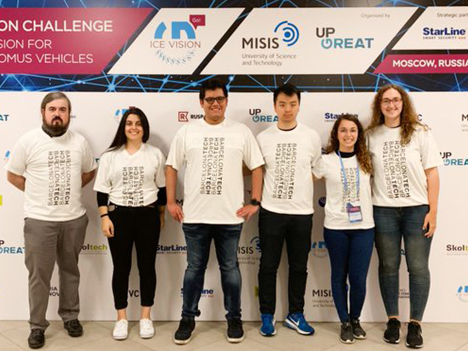
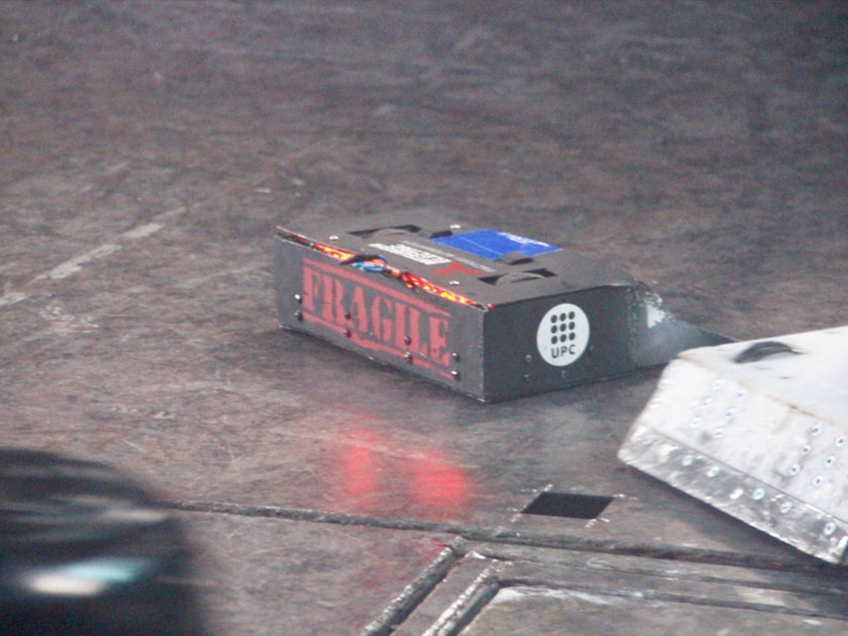
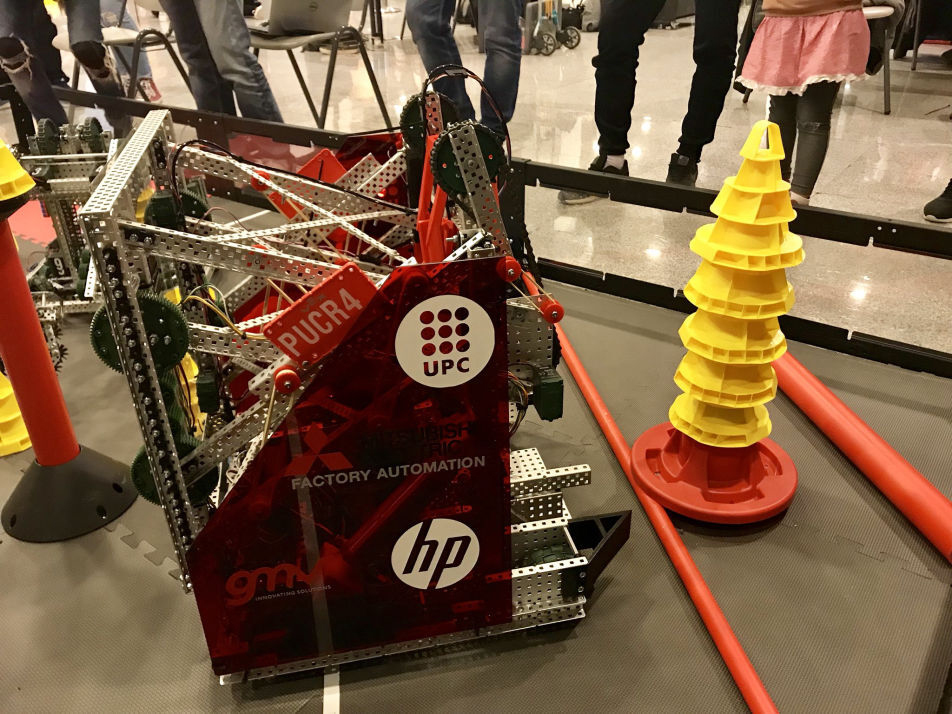

Septiembre 2017

La necesidad de continuar aprendiendo fuera del aula y poder
compartir sueños e inquietudes con otros estudiantes, hizo que
en 2017, se fundara PUCRA, la primera y única asociación de este
tipo en todo el territorio español. El objetivo principal ha
sido siempre participar y ganar las competiciones
internacionales más importantes del sector.
Septiembre 2018

El proyecto surgió de la necesidad de dar continuidad a las
nuevas generaciones de la asociación, fomentando las vocaciones
científico-tecnológicas de los más jóvenes. Durante los últimos
años hemos tutorizado varios equipos propios de secundaria y
bachillerato para participar en la categoría de High School de
la VEX Robotics Competition.
Febrero 2020

PUCRA recibió el 1er premio dirigido a las asociaciones de
estudiantes de la UPC para reconocer y promover el
asociacionismo, su implicación y el fomento de los valores
inspiradores de la vida universitaria.
Septiembre 2020

Dado que nuestro campus se encuentra entre los barrios del Besòs
y la Mina, dentro de las actividades de responsabilidad social
que se llevan a cabo desde la dirección de nuestra escuela,
hemos colaborado para dar la oportunidad a varios centros
socioeducativos del entorno para poder participar en la
categoría de IQ de la VEX Robotics Competition, abriendo los
horizontes de más de 100 niños en situaciones vulnerables.
Noviembre 2022

Una vez más, la UPC corroboró nuestro trabajo e implicación en
la vida universitaria, otorgándonos el premio de asociaciones en
la disciplina de estudios y formación transversal, demostrando
que nuestro proyecto tiene una gran visión de futuro.
Mayo 2025

El 6 de mayo, el equipo PUCRA viajó a Madrid para participar por
primera vez en la competición “Sener-CEA's Bot Talent”, un
desafío de diseño y programación de robots autónomos inspirado
en misiones de la NASA. En ella, se logró una doble victoria,
ganando tanto el premio de diseño como el premio absoluto del
jurado. El equipo, formado íntegramente por estudiantes de
grado, demostró una gran solvencia en visión por computador,
navegación inteligente e IA aplicada. Un éxito que refleja el
talento, la dedicación y el trabajo en equipo de sus
miembros.
Febrero 2023

Esta temporada, el equipo participó en una modalidad específica
de la VEX Robotics Competition, logrando una octava posición en
el ranking mundial de Skills autónomo.
El equipo
participó por segundo año consecutivo en la gran final mundial
VEX WORLD CHAMPIONSHIP 2023, celebrada en Dallas (Texas) a
finales de abril.
Abril 2022

En una temporada llena de retos, PUCRA tuvo la oportunidad de
volver a participar en la gran final mundial VEX WORLD
CHAMPIONSHIP 2022, celebrada en Dallas (Texas).
Una
gran oportunidad para conocer y colaborar con otros equipos
internacionales, aprendiendo de sus metodologías y objetivos,
para darle un enfoque muy distinto a la temporada siguiente.
Enero 2021

Tras la participación en la edición online de la ERC, el equipo
enfocó todos sus esfuerzos en la evolución y construcción de
THARSIS. Desde el diseño mecánico y fabricación de todos los
sistemas estructurales y motrices, hasta la implementación de
redes neuronales para la navegación y detección autónoma, además
del diseño propio de toda la electrónica de potencia y control.
Septiembre 2020

En su tercera temporada, PUCRA decidió dar un paso más allá y
afrontar un nuevo reto tecnológico: la European Rover Challenge
(ERC), una competición universitaria que plantea soluciones a
problemas reales de las misiones espaciales actuales.
A pesar de los meses de pandemia y la
semipresencialidad universitaria, el equipo logró reinventarse,
diseñando THARSIS, un robot autónomo enfocado en la exploración
espacial, para participar en la ERC 2020 en formato online. Con
más de 100 equipos internacionales, PUCRA consiguió llegar a la
final en su primer año, alcanzando una orgullosa octava
posición.
Julio 2019

Un avance más del equipo de competición, participando en una
nueva disciplina. ICE VISION HACK es una competición de
inteligencia artificial y Machine Learning, celebrada en Moscú
(Rusia). PUCRA consiguió proclamarse campeón europeo de la
competición, reafirmando su posición como asociación nacional e
internacional de robótica.
Febrero 2019

Tras la participación del primer año en VEX Robotics y la
experiencia adquirida en otras competiciones, logramos
convertirnos en campeones nacionales, clasificándonos para la
gran final mundial VEX WORLD CHAMPIONSHIP 2019, celebrada en
Louisville (Kentucky).
Luchando codo a codo con los
mejores equipos de los cinco continentes, superando las fases
eliminatorias, PUCRA obtuvo la mejor clasificación de un equipo
europeo en la historia de la competición. Una experiencia
inolvidable que impulsó al equipo a otro nivel.
Septiembre 2018

En la preparación de la segunda temporada, el equipo decidió
participar en un formato de competición diferente a todos los
anteriores. La lucha de robots es una competición intensa,
emocionante y técnicamente muy exigente, donde PUCRA destacó por
su potencial.
PUCRA consiguió ser finalista y
campeón europeo en la Robot Extreme celebrada en Colchester
(Reino Unido), compitiendo contra los mejores equipos del
mundo.
Abril 2018

Tan solo dos meses después de su triunfo con VEX, PUCRA
participó en Eurobot 2018, donde se consagró como el 25º en el
ranking mundial de más de 3000 equipos, logrando la mejor
clasificación nacional.
Marzo 2018

En nuestro primer año, PUCRA participó en la VEX Robotics
Competition, clasificándose para la final estatal. Siendo
finalistas nacionales y el primer equipo universitario de la
competición, un resultado magnífico para la primera
participación del equipo.